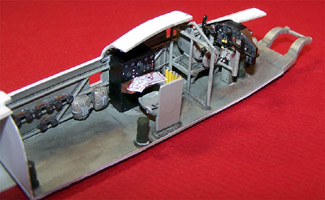
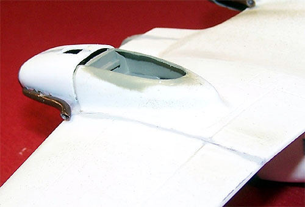
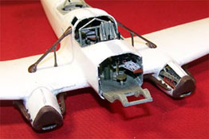

{kind=link}
{kind=link}
{kind=link}
{kind=link}

MPM 1/48 Fw-58B Weihe Multi-Media Vacuform
Kit #48013 Collector�s Market Value $41.50
Images and text Copyright � 2005 by Matt Swan
Developmental Background
In 1935 the Focke Wulf Weihe (named after the bird of prey known as Kite or Drache) flew for the first time. It was developed as a light transport aircraft intended to carry up to six passengers and operate in the same class as the British Anson or Oxford. It did not take long before the recently resurrected Luftwaffe saw the potential of the aircraft. It was adopted as a standard utility aircraft very quickly and saw service with not only the Luftwaffe but with many co-belligerent air services. Powered by a pair of Argus S-10 eight cylinder inverted V air-cooled engines producing 240 hp each and with a fabric covered welded metal frame it was configured in several different ways for various applications.
Six primary variants were produced; the B-1 was the original version built as a transport and also used as a training aircraft, the B-2 had as many as three defensive machine guns in a glazed nose and dorsal turret and could have external racks mounted under the wings and fuselage to carry 25 Kg bombs. The C version, which was the most produced, had a solid nose and large cargo doors installed in the fuselage directly over the wings. The Ki-2 was the civilian passenger version with a raised fuselage roof to provide more headroom and the S version, also known as the �Leukoplastbomber� or �Band-Aid Bomber� was the aerial ambulance. A few aircraft were fitted with floats and designated Fw-58BW and used as seaplanes.
The aircraft was relatively slow and provided a very stable platform for bombing and aerial mapping. As a result of these flight characteristics Sweden purchased several aircraft prior to the war to use specifically as aerial mapping platforms. Between 1939 and 1942 nearly 4,500 aircraft were produced yet today it is very much a mystery plane to WW2 aircraft fans. Many of these aircraft ended their careers as fire exercise subjects or simply wore out over time. Today only one example survives in a Brazilian museum.
The Kit
If you take a moment and consider the time period when this kit was produced (the 1970s) then look at the accessory items such as the acetate instrument sheet and brass photo etched pieces you may realize just how special a kit you hold in your hands. Obviously this is a vacuformed kit and is done using cavity molds; this produces a nice crisp panel line and good surface texture. The panel lines are consistent and clear on all three sheets of vacuformed pieces. The plastic stock that is used for this kit is really heavy. This results in good solid pieces even where the plastic has been stretched across a large area like around the cockpit area or the engine nacelles. All the Vac pieces with the exception of the engine nacelles have very good definition. The engine nacelles are somewhat vague on their demarcation and will take some careful study before any cutting is done. The process of vacuforming uses several fine holes within the mold to suck the soft plastic to shape and as a result of this there are several fine raised dimples across the Vac part surface that must be shaved off during the part preparation process. Overall there are twenty vacuformed parts to work with.
You may click on the first three images above to view larger pictures
While the Vac parts of this kit are so nice the injection molded pieces leave something to be desired. Here we have all the signs of a limited run kit from the 70s � heavy sprue gates, poor mold alignment and heavy flash. Each part must be sawn off the tree rather than cut off with sprue cutters. If you use sprue cutters you will assume a high risk of damaging the parts and there is no option to go back to the manufacture and get replacements. Once removed from the tree each part requires extensive and careful clean-up before it can be used. Among the plastic pieces we have various detail pieces such as landing gear parts, cockpit interior items, propellers and engine cowling faces. Overall detail on these pieces is fair at best but the basic size and shape is good so there is plenty of opportunity to dress these up with some modeling skill. Of the seventy-seven plastic pieces here a few of them are duplicates that indicate this mold did double duty for the Fw-58C kit that MPM produced during the same time period.
Moving right along we have a single set of clear parts (no room for mistakes here) covering the flight deck canopy, the clear nose section and the four side windows. The parts display well defined frame lines but have all acquired a slight cloudiness from age. I do not think they will be able to be made totally clear even with an application of Future. The most distressing aspect of the clear parts is that the nose cone is split right down the center which puts a seam directly through the clear panels on the top of the nose. At this point I don�t know if it will be best to try to assemble this and try to fill that seam or to simply cut those panels out and replace them with new clear stock. Parts count gives us eight clear pieces.
Lastly we have a small sheet of photo etched brass pieces and an acetate sheet of instrument faces. The brass includes two sets of rudder pedals (only one set is used for the C version) with boot straps, a nice three dimensional dash face, some lower cooling grills for the engines and gun sight pieces. The multi-media instrument panel does make for a good looking piece but the kit lacks all detail for the throttle quadrant. Counting the seventeen brass pieces, acetate panel, twenty Vac pieces, eight clear parts and seventy-seven injection-molded pieces we have one hundred twenty three pieces in the box.
Decals and Instructions
The instructions for the kit consist of an A-3 and an A-4 sized sheet of mimeographed information. One large panel of the A-3 sheet covers the historical background of the aircraft in three languages with the next panel covering decal placement for one aircraft and some general color codes for the interior areas and exterior scheme. The flip side of this sheet has a full size three view drawing of the aircraft showing proper wing dihedral, tail-plane alignment and antenna placement. The A-4 sheet has two exploded views that show all the various parts along with a complete parts map. This map is important because none of the trees or Vac sheets have part numbers on them. There is a lot of information packed into these sheets and careful study is needed before anything is glued together.
There are two sheets of waterslide decals from Propac Team which cover a single Luftwaffe aircraft. National markings, two part swastikas and aircraft code letters are pretty much the extent of the decals other than a single set of warning stencils. I�ve used Propac Team decals before without any complaints but I think I�ll be looking for some aftermarket decals that can be converted to this aircraft.
Conclusions
As far as I know MPM is the only company that ever offered this kit in 1/48 scale and I know of no kits in 1/72. This seems somewhat odd as this was a very important aircraft for the Axis and so many were produced. The kit is well engineered and while some advanced modeling work is required, can be made into a very impressive model. While there are no aftermarket items made specifically for this model there are many things that can be commandeered for use with it such as Luftwaffe seatbelts, Argus engines and aftermarket Luftwaffe, Swedish, Romanian, Bulgarian or Slovakian decals just to name a few. Not only did MPM offer this model but they also produced it in a 1/48 resin version and a multimedia vacuform C version. No longer available in hobby stores if you see one at a trade show or on the swap tables I suggest you grab it and head for home because you have a rare little gem.
Construction
9/30/05
Whenever I review a kit I always have to fight the urge to just jump in and start building and let me tell you, the urge was strong with this one. While I was examining the box contents a poster arrived from a friend in Brussels that showed an Fw-58B in Romanian markings. Can you believe that? Well, I was lost right there. Resistance had become futile.
The first step with any vacuform model is to outline the parts with a fine black or dark colored marker and I had already done that for the review so out came the fresh razor knife and the fuselage was quickly removed from the master sheet. For those of you unfamiliar with Vac kits this was done by scoring the demarcation line within the black marked line three or four times then snapping the part free. This may sound easy and guess what � it is. The plastic over the cockpit area was rough cut with a Dremel cut-off wheel then sanded to size with a flat diamond needle file. The nose piece that would be left in place for the C version is not removed until after the main seam line has been sanded to help prevent the fuselage from warping. The excess plastic at the cut line was sanded down using a sheet of aluminum oxide sandpaper attached to my desk to ensure a nice flat surface.
When I cut the fuselage pieces out I also cut out the cockpit canopy and removed the injection molded backing plate for the instrument panel. These two pieces are needed to test fit onto the fuselage during the sanding process to make sure that not too much material is removed from the fuselage. You can always sand a little more off until these two key parts fit but it is real tough to add plastic if your fuselage ends up being too narrow. Once I was happy with the way these pieces fit together I removed the Vac pieces that formed the floor pan along with the injection piece that will house the bombsite. The instructions indicate there is an angle in the first floor pan but does not show exactly where it should be or how much of an angle should be created. I taped the fuselage together and worked through the wing opening to determine the answers to these points then attached the front injection piece.
I went ahead and assembled the rest of the cockpit interior pieces that the kit provides. These pieces hint at a very nice interior but did not give me enough detail. I plan on opening both crew hatches so visibility into the interior will be good and with the dorsal gun position you�ll be able to see into the fuselage from that angle also. The nose is cut off and the floor pan is test fit again but now I am paying attention to what is visible along the interior side walls and thinking about what I can do to help flush this space out. Once again the fuselage is taped together but this time I have cut out the clear nose pieces and have them taped in place also.
While I think about detailing this I open up the four side windows with a burr bit in the Dremel followed by some careful shaving with a razor knife. The dorsal position is not very clearly marked, a result of this fuselage piece doubling for the C model, so to help me out here I�ve removed the new panel from the master sheet and have it handy for repeated test fittings as I slowly open the hole with a series of flat files. I do notice that the new plate for the dorsal gun position is slightly wide and will need some trimming when it comes time to permanently install it.
Okay, it�s time to start scratch building. First I want to construct the tubular steel framing and this is done with Evergreen styrene rod glued in place with Tenex 7R. The area directly above and behind the cockpit is ribbed with thin strips cut off a sheet of stock plastic using a six-inch stainless steel ruler to keep them even. The strips are so fine they want to curl up and have to be glued down in increments to straighten them back out. During repeated test fits of the basic floor pan I found a couple of spots where the ribbing had to be removed to get a good fit but this will not be noticeable when complete. In fact it actually helps to align the floor pan. Once that is done the fuselage heads for the paint room. I had a tough time deciding what color to paint the interior. I have a couple of black and white pictures of the interior of the Fw-58 and it could be light gray or it could be gray green. Since this was built by Focke Wulf and this model was manufactured prior to 1941 I decided to use RLM 02, gray-green.
That big round wheel thing is a kit part and actually does look just like a big round wheel thing found there on the real plane. The fire can was made from some extra sprue sanded down with some magnet wire and Evergreen rod. The ammo cans came from the spares box (never, ever throw anything away) and the forward instrument panels were made from varying sizes of Evergreen flat stock with thin sheets of overlay to give them depth. Instrument faces are Mike Grant decals. Parachutes are again from the spares box and the map table is Evergreen flat stock. Not readily visible from this angle are some maps of Europe scanned, reduced, printed and glued to the table. I made a map light from a small piece of sprue and a length of magnet wire. Before the maps got glued down the entire interior got a good coating of basic sludge wash. Alignment tabs were added from scrap plastic left over from cutting out the fuselage sections (never throw anything away � ever). A couple of umbilical wires were superglued along the fuselage wall and tie downs are simply painted on the wire. This may sound like a lot of work but so far the interior detailing is one day of modeling, all right � it was a full day.
We�re going to give that fuselage interior a day for everything to dry now and start working on the floor pan. In this shot to the left we have the base floor pan as provided by MPM. Not very exciting is it? First thing I want to deal with here is the view into the aft of the fuselage � I don�t like it. I use more Evergreen ribbed flat stock to fashion a bulkhead and an access door is made simply by framing an area with thin strips of plastic. This is test fit into the fuselage a couple times and adjusted with a sanding stick until a good fit is achieved then glued to the floor pan. The assembly at this point heads to the paint room for a coat of RLM 02. Looking in the spares box I have a bunch of field kits left over from a couple of previous Luftwaffe builds so these are painted up and superglued in various places. I still have a parachute kicking around so that is going to be placed in the general area of the bombardier. The seat for the bombardier is made from more of that Evergreen ribbed flat stock, man; this is some handy stuff to have lying around.
When placing the bombardier�s seat the floor pan was test fit to the fuselage for proper spacing with the forward map table. Seat belts were added from a Lion Roar set of Luftwaffe belts. Those yellow cans hiding behind the pilot�s seat � I have no idea what they are but I found them in the spares box and thought they would look cool back there. Mike Grant decals are added to the large radio unit and some colored dials are added using a sharpened toothpick dipped in paint. The floor pan gets a coat of sludge wash and more reduced maps are added to the radio operator�s table. The traffic areas on the floor are rubbed with brown and gray crushed pastel chalks to give them a dirty look and a few wire umbilicals are added from the small instrument panel in front of the pilot to the large radio unit.
And here is a look at the floor pan placed into the port fuselage. Oh yeah, that second control yoke is not called for in the instructions. I added it based on reference photos of this area. I guess if you needed to use this station it was while the flight crew was changing places or you where in a really deep pile of stinky stuff.
The last internal piece to deal with is the dash board. As I said in the box review section this is a pretty good dash but the throttle quadrant is totally naked. First let�s get the base dash completed. The three plastic pieces that form the back panel and throttle quadrant are assembled and painted RLM-02. The brass dash face is airbrushed with Mr. Surfacer 1200 then with RLM-66. The acetate panel has the back side painted white to highlight the instrument faces. Moving back to the dash face the instrument bezels are done with some flat black dry brushed across the surface.
A fine brush is dipped in red and touched to the inner edges of a few openings followed by some yellow. These openings were picked based on close inspection of some black and white pictures of actual Fw-58 dash boards. I applied some red, yellow, silver and white paint to various knobs with that sharpened toothpick then test fit the acetate panel to the brass face � perfect fit, thank you very much.
A couple of very fine spots of superglue were placed on the acetate panel and the brass face was pressed in place. Once this set the assembly was test fit to the plastic base � oops, now things don�t quite fit. I had to saw some slots into the piece that forms the throttle quadrant with a razor saw to get the piece to fit properly and then it was attached permanently with a fine layer of superglue � looks pretty good doesn�t it? Well, it�s not good enough. Next I will add throttles, flap levers, landing gear levers, more instrumentation and we'll kick this up a notch.
10/2/05
Working with an old black and white picture of a Fw-58 dash I start dressing this up. First I added about six Mike Grant Instrument Decals with two going into the existing dash layout and four going onto the sub-panel on the lower right. I also used a couple of placards from the same decal sheet onto the top, front and sides of the throttle quadrant. I save all left-over model pieces and have accumulated a pretty nice little stash of odd photo etched stuff. Looking through this stash I found several small levers that were used to add the throttles, flap levers and landing gear levers. These were all attached with very fine spots of superglue and done while wearing a 15 power Omni Visor. Two more levers were added to the dash itself and the various lever handles were painted with white, black, red and yellow enamels. A little Micro-Sol setting solution was applied to the decals and the dash was ready. This took about two hours to finish.
It�s time to start bringing all these subassemblies together. First I want to install the floor pan into the fuselage so it will be secure while I place the instrument panel. The directions are very vague as to the exact placement of the panel so I decided the best approach would be to install it last. I let the glue set overnight on the floor pan then began the dash installation, right away I started running into trouble. The right hand control yoke interfered with the flap levers on the dash column and broke two off in the blink of an eye and they just went sailing right off the work table.

Fortunately my new work space has hard wood floors and I was able to recover the PE levers very quickly. I reattached the levers then carefully broke off the right hand control yoke. The dash still would not fit � now it conflicted with the rudder pedals. I�m getting irritated now but kept calm. I reached into the fuselage with some heavy tweezers and removed the rudder pedal assembly. Now the dash fit. It was secured with some Tenex 7R then the rudder pedal assembly was reinstalled as was the right hand control yoke. You may click on the small image to the left to view a full size picture of the floor pan installed in the left side fuselage.
At every step where I add something or put a subassembly in place I have been dry fitting the fuselage halves together and making any small adjustments that were necessary and this has really paid of now. The fuselage halves are dry fit one last time then Tenex 7R is wicked into the seam. I pay a lot of attention to panel lines and edge lines at this point making sure the halves are properly lined up and there is no warpage. Once the entire seam has been glued I spend the next hour keeping some gentle pressure on the halves while the glue sets up and the model is given the rest of the evening to cure fully.
The next piece I want to work on is the dorsal gun position. MPM does not give us much to work with here. The instructions tell us to glue a seat back to the fuselage wall and glue the gun armature to the fuselage also. Hey, this is a turret! That means it should turn! First things first, I need to saw a gun stowage slot into the aft section of the fuselage and this is done with a razor saw followed by a flat diamond file. Next I haul out my Evergreen plastic stock. Starting with a very thin strip of sheet I cut it to just wrap around the interior of the gun position opening and carefully glue the ends together to make a ring. With this still held in the opening I glue a piece of flat stock to the bottom of the ring. This gives the ring a lot of strength. The ring is removed from the opening and the outside edge of the flat stock is trimmed to be round. The interior ring area of the flat stock is removed with a Dremel leaving a small lip. I cut a thin string of plastic off the base stock sheet and wrapped that around the outside base of the ring to create a spacer and lower compression edge for the turret. This is glued in place with fine drops of Tenex 7R on a paint brush. The ring is test fit to the opening � looks good so far.
Next the kit provided seat is glued to the inside of the ring. Once the glue sets the ring is reinserted into the gun opening. Using another string of plastic I carefully wrap this around the top edge of the ring and glue it in place sandwiching the fuselage between the two strings of plastic. The glue process is most delicate here because I do not want the glue to wick down to the fuselage and lock the whole thing up. I am successful and the turret is now secured in place and turns easily. The gun armature is glued to the inner lip of the turret ring and some blocks of stock plastic are added as a fluid reservoir and small instrument panel. A piece of round stock is cut and added to one side and some small pieces of magnet wire are added as hydraulic lines. Now it is ready for the paint room.
The turret assembly is first primed with Mr. Surfacer 1200 then airbrushed with Gunze Sangyo RLM 02. After the paint has dried for an hour some Lion Roar Luftwaffe lap belts are added, the small panel and tank are painted black, two Mike Grant Instrument decals are applied to the panel and the hydraulic lines are painted dark brown. The assembly is installed into the fuselage. The outside corners of the gun position plate needed to be shaved with a razor to conform to the fuselage walls then Mr. Surfacer 500 is applied with a toothpick to all the seams and allowed to set completely. All the seams are wet sanded until smooth (about two hours of elbow grease there) and the fuselage is basically complete.
So far I have put a lot of work into the interior on things that are not going to be easily seen. Moving onto the flight surfaces I will continue to make changes to the model that will be more readily viewed. Let�s take a look at the elevator; the kit pieces are vacuformed with the elevator in the neutral position � I want those babies drooped so once the primary pieces are removed from the master sheet the control surfaces are scored repeatedly with a razor knife until they can be snapped off.
The control surfaces were glued together and labeled left and right then the central section was glued together. I still have to fill the interior opening but have already filed a slight bevel to the inside surface so when reassembled they have about a 10 degree droop. When test fitting the elevator to the fuselage I found that the fuselage section needed some heavy sanding to get the correct angle of attack. I test fit things a lot and this is probably one of the most critical things you can do to ensure good results when modeling, don�t skip this step.
10/15/05
After all sanding and test fitting of the tail plane had been completed the pieces were glued in place. The injection molded tail plane struts are very brittle with heavy gate ports and a very noticeable mold separation seam. This is all cleaned up with sanding sticks and then they are glued in place. Each strut has a vertical support and a lot of care is needed to ensure that they are parallel to the vertical center of the stabilizing fin.
Next the wing panels are removed from the master sheet and cleaned up. The trailing edges are thinned out and the vacuforming dimples are shaved off the surfaces. I gave a lot of thought to lowering the flaps on this build then found out that the Fw-58 rarely if ever used the flaps. Due to the very light wing loading those huge flaps were only used when operating on very short runways. Since this is going to be a Romanian bird chance are that is was operating from good condition flying fields so the flaps will be left in the closed position. The inner bulkheads for the landing gear bays were removed from the master sheet, sanded to shape and installed. Once the outer wing panels had been glued together they were attached to the central lower wing section. The glue is allowed to completely set and the seams are then wet sanded smooth.
Time for more dry fitting � the wing is fit to the fuselage and not only is the immediate connection checked for fit but also the wing dihedral and alignment to the rest of the model is verified. A few minor corrections are made with a diamond needle file and the wing gets glued in place. The upper seam at the fuselage and the lower front and rear seams are all filled with Squadron White Putty and smoothed out with a cotton swab soaked in acetone based fingernail polish remover.

We�ll let the putty set up for a day then start sanding this stuff down. In the meantime I will be spending some time thinking about how to detail the interior of the gear bays and check some reference material on the gear struts.
11/5/05
Not too much progress has been made on this build over the last few weeks. Some of the more mundane aspects of life have been intruding on my hobby along with some contract builds I�ve been working on. However some limited work has been done. I have cleaned up all the support struts for the wing and installed them. All the previously filled seams have been sanded down. I have taped together the nose glazings and taped them in place just to get some idea of how she will be looking and have set the main canopy in place for the moment. I have a disc of reference material that I still need to work through before I start putting the engines together. I had looked at it briefly a few weeks ago and noticed a real nice shot of some ground crew replacing spark plugs on the Argus engines and need to find that shot again. But for now this build is setting off to the side of the work area and looks like this �..
12/4/05
I finally made it back to this project. I usually have several builds going all at the same time and can divide my time pretty evenly amongst them. Occasionally one will hit a critical mass and suck up all my time until it is complete which is exactly what had happened with the Ju-87 D-5 build. That one is complete so this one will start moving forward again.
With the primary fuselage and wing assemblies complete I need to start focusing on the wheel wells, landing gear and engine assembly. After removing the kit parts from the sprue and cleaning them up I checked my reference material for images of the landing gear. Surprisingly MPM did a real good job on the gear. It is a fairly clean and simple assembly and other than the lack of a brake cable it looks very close. Close enough that I will only add the brake cable and move on. The interior of the wheel wheels are airbrushed with RLM 02. The main strut is mounted on a toothpick and the gear leg is assembled and painted RLM 02. The wheel is done with tire black and the wheel hub is brush painted flat black. The oleo covers are painted rubber and the brake cable is done with a very dark brown. The whole thing gets a heavy coat of sludge wash and this one is done.
The engine is going to be slightly more difficult as the kit does not include one and right at the moment I have very little in the line of pictures to help me out. My reference material has one image of the engines being serviced on a Swedish aircraft and that is my initial basis of reference. I just happen to have several resin Argus AS-410 V-12 engines and will use a couple of these to build an Argus S-10 engine. This begins with a razor saw and cutting banks of cylinders free from the 410 engine and reassembling them to match what I see in the reference material. I add some ignition wires, exhaust manifold and PE cylinder covers to busy up the look. A few resin engine mounts are recovered from the scrap box, cut down to fit this and added to the engine. The engine block is done with flat black enamel, the cylinder heads with burnt iron dry brushed with silver and the ignition wires in red. The engine mounts are RLM 02 and the exhaust manifold is Testors Rust. The entire assembly gets a wash of lighted Payne�s Gray and is set aside.
The engine cowling pieces are removed from the master sheet and cleaned up. There exist small dimples along each side of the nacelle to help in locating the exhaust stacks � these I drill out to fit a piece of Evergreen round rod. This will be inserted to the interior manifold so that with the panel open it is complete inside. I have cut out the left hand service panel and opened up the air inlet in the nose of the nacelle. Later I will open the right hand panel. I test fit the engine assembly into the nacelle and to the bulkhead in the wing. A few minor adjustments are needed and the engine is attached to the bulkhead. It is about at this time that Steve Forster contacts me and informs me that he has just recently visited the air museum in Rio and has some pictures of the sole surviving Fw-58. When I examine these pictures (he took some great shots of the engine � thanks Steve) I find that my modeling guesswork is very close to the actual thing � I am very pleased with the results.
12/26/05
I spent some time putting together the second landing gear strut and cleaning up the connection of the engine to the bulkhead. The right side engine nacelle was assembled and installed and the landing gear bays were painted RLM-02. Mr. Surfacer 500 was layered onto the connections of the engine nacelles to the wing and sanded down to achieve a smooth connection.

The four exhaust stacks were removed from the sprue and cleaned up. Once the heavy mold separation seams were removed and the injector gates shaved off I drilled a medium size hole into the end of the exhaust then carefully opened it up with a fresh Xacto blade to create a large opening with a fine wall around the perimeter. Once all four were done they were glued in place.
Next the landing gear struts were dry fit to the bays. The remaining length of magnet wire that forms the brake cable was bent to conform to the wheel well and trimmed off. A good drop of Tenax 7R was placed into the well and the first strut went in. Once the glue was set up enough to hold it in place the second strut went in and then they were checked for alignment. The tail wheel was cleaned up, a mounting hole was drilled and it was placed. At long last the Wiehe has found her legs.
When I was putting together the right hand engine nacelle I painted up a second engine and glued it into the nacelle to take care of the areas that would be visible through the front air inlet. I did not go so far as to include wiring or mounting hardware as none of that would be visible anyway. In the picture below and to the far right you can just barely seen part of that engine through the front air inlet.

You may click on the small images above to view larger pictures
1/2/06
All the clear parts that I�m going to use (some will be replaced) were removed from the master sheet and dipped in Future. While removing the clear nose cone with my Dremel I slipped and put a terrible mark across the glazing. To repair the damage I sanded the spot with progressively finer sandpaper until I was polishing with a 4000 buffing stick then dipped the piece in Future. You cannot tell there was ever a mark on it now. The clear plastic has a lot of cloudiness to it and the Future is only reducing that marginally. Any flat windows will be replaced with clear card stock like on the fuselage areas. The small panes are cut to size, masked with tape and glued in place with Testors Clear Parts Cement. While the Future was curing on the large pieces I worked on placing little exterior detail pieces like the landing light, external generator and antenna hardware.
Once the Future was cured I taped the two main nose pieces together making sure all the frame lines were aligned then dry fit the piece. I had to trim the front and back using the flat side of a large cut-off wheel mounted in my Dremel and using a very soft touch. Once I was happy with these surfaces I mounted the nose cone with tape to the first two pieces and test fit the entire assembly to the nose of the aircraft. Everything seems to be lining up very well. The biggest issue that I will have to deal with is a seam that runs directly through a large curved panel on top of the nose and through a smaller round window. I think I will cut these two panels out, assemble the nose then replace the panes with new ones made from clear stock. The larger of the two will have to be heat shaped on a curved surface before being cut to its final size � more on that later. For the moment here she is, notice in the background of the left hand picture is the fuselage from an Italian SM.79 � that�s just so you can get a size reference. And as with most of these small images you can click on them for a larger picture.
1/21/06
The general fit of the clear parts seems to be good so now I will deal with that nasty seam through the top panels. I cut out the large square panel and the small round panel from the top pieces. I cut some small tabs of plastic from Evergreen stock and superglued them onto the clear parts to act as alignment tabs. Note that I used superglue here, normally I stay well away from superglue when working with clear parts but these are not polystyrene clear parts � more like thick acetate. Now the two halves are glued together then the nose section is added. Some accelerator is applied and the glue seam is trimmed with a razor while it is still soft. The machine gun is painted and installed with some clear parts cement. The tedious task of masking these panels with strips of masking tape is next then new clear panels are cut from some clear bubble card and glued into the top openings using Testors Clear Parts Cement. So far I have about five evening of modeling time to reach this point.
The entire nose assembly is now ready to be attached to the model. Superglue is used for the initial work followed by a coat of RLM-02 (can�t fill clear parts seams with first laying down some interior paint color) followed by an application of Mr. Surfacer 500. Over about six more evenings I will sand the seam, Paint RLM-02 again, apply more Mr. Surfacer, let dry and sand again and repeat the entire process until I have a connection I am happy with. This seems like a lot of work for very little progress but at long last the seam is done. The last little details like the pitot tubes are added and the openings are all packed with dampened tissue paper. We are now ready for some primer!!!
One final inspection for errors is done and the model is dusted off with compressed air before the kit gets a complete coat of Mr. Surfacer 1000 cut about 50% with lacquer thinner. This dries overnight and some light sanding is done the following day to smooth out a few rough areas. She gets another dusting with compressed air and heads back to the paint room for preshading. All panel lines are hit with Krylon gloss black applied with low pressure at close range. Don�t ask my why I used Krylon this time � I wanted a black preshade and the can was sitting right there so �� Anyway, here she sits now waiting for some RLM-65 next.
2/10/06
The preshading has dried and the painting can continue. First the lower wingtips and fuselage are painted yellow with Testors flat yellow. Once this has dried all areas are masked off and the lower surfaces are down with RLM-75 Light Blue. After another day of dry time the lower are is masked off and the upped splinter pattern of RLM-71 is done. More dry time and then more masking before the final layer of RLM-70 is added. Now the main masks can be removed. Some little fuzzies have attached themselves to the engine details from the once damp tissue paper but a paint brush dipped in water takes care of that problem.
Next comes the standard coating of Future floor polish cut 25% with isopropyl alcohol to seal the paint. This dries overnight and decals start going down. Nobody makes decals for a Romanian Fw-58 and these are custom markings made by Mike Grant specifically for this project. These decals are two piece markings with a solid white backing followed by the colored decals. The rudder is masked off and painted flat yellow, allowed to dry then a 6.5mm wide strip of masking tape is laid down the center before red and blue enamels are applied to create the Romanian tail colors. Next I�ll be working on some unit markings and service stencils.
3/4/06
Okay, this is it � the final installment of this build. Once the decals had fully dried down I sealed them again with Future then applied a sludge wash into the various panel lines. This was wiped down with a slightly damp paper towel to finish the weathering. The antenna was installed next � here I used some invisible thread drawn across a black permanent marker. I started with the two short spans forward of the mast then the two long spans to the tail and completed it with the final short spans running up the mast. All contact points were done with fine drops of gap filling superglue and accelerator. Various antenna insulators are simply spots of superglue painted white.
The engine access doors are installed with superglue and short pieces of magnet wire are cut and painted red to act as hood supports. I dug up some photo etched hinges from the spares box (they originally came from a Koster Do-217 conversion set) and used them to install the landing gear doors. The kit provided photo etched gun sights were placed (these are really different pieces) and the photo etched radiator grills were placed under the engines. For the radiator grills I used Testors Clear Parts Cement so that I would have plenty of time to get them properly positioned. The aft gun was painted, assembled and installed. The model was then coated with some Polly Scale clear flat and the last of the masks could then be removed. The only thing left now are the crew access doors and these do present a bit of a problem.
The real problem with the crew doors come from the fact that all the side frame lines are in the wrong position. If you plan on leaving them closed then there is no problem but once open the hinge line is all wrong and they will not position correctly. I had to lay down my masking tape to move the center frame line about 2mm towards the top of the door then trim a thin strip off the wide bottom end of the door and relocate this strip to the narrow top side of the door. Did you follow that? Can�t blame you if you did not because I can barely follow it. The final result of this is that the center hinge line moves almost 3mm down the door and now they look right in the open position. The doors were Futured, masked, airbrushed with RLM-02 then with the top colors in a matching splinter scheme to the rest of the aircraft. The hinge was done by scoring the clear plastic with a fresh razor knife, bending the door to the desired position then drawing a fine amount of superglue down the length of the hinge to lock it in position. Grab handles were made from magnet wire and the doors were attached with more superglue. The real secret to using superglue around clear parts is accelerator. Fogging of clear parts is caused by the fumes emitted by superglue while it cures and accelerator causes it to cure immediately hence � no fume and no fogging.
Time for the final touch � some ground pastel chalks are rubbed into the lower surface of the wings as exhaust staining. I use an eye shadow swab to do this with � those things are what your wife/girlfriend use to put their eye shadow on with and are quite handy to have around. Just don�t let her know where you keep them or you�ll never have one when you need it. It has taken me over five months to complete this build and really the only areas that gave me any trouble were the clear parts, the nose glazing has that horrendous seam right through two panels, the crew doors have the frames in the wrong places and the plastic used by MPM is slightly cloudy from age. Other than that everything went together very well, all parts fit like they should, directions were good (not great, just good) but we cannot forget this is a 1970�s era kit so for that time it must have been rather exceptional.
I�m using one of my generic diorama bases for pictures, the crew members are from Preiser figure kits and from an ICM kit. Oil drums come from Preiser and Verlinden, the work table and ladder are from the ICM Russian Aces series of Yaks and the Kettenkraftrad is the Tamiya kit.
You may click on the small images to view larger pictures


{kind=link}
{kind=link}
{kind=link}
{kind=link}
{kind=link}
{kind=link}
{kind=link}
{kind=link}
{kind=link}
{kind=link}
{kind=link}
{kind=link}
{kind=link}
{kind=link}
{kind=link}